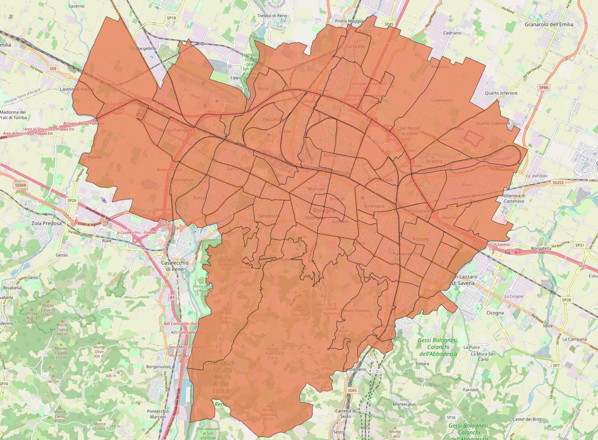

Aree statistiche
Aree statische contains the division of the municipal territory into 90 statistical areas meets the need to define a “grid” of analysis that is more detailed than the traditional division of Bologna into districts or zones, while at the same time sufficiently concise compared to the highly fragmented structure of census sections.
This dataset is used to delimit the area of Bologna, when you want to analyze smaller areas with respect to the entire municipal area


Popolazione per area statistica
Popolazione per area statistica contains the population density per Bologna statistical area.